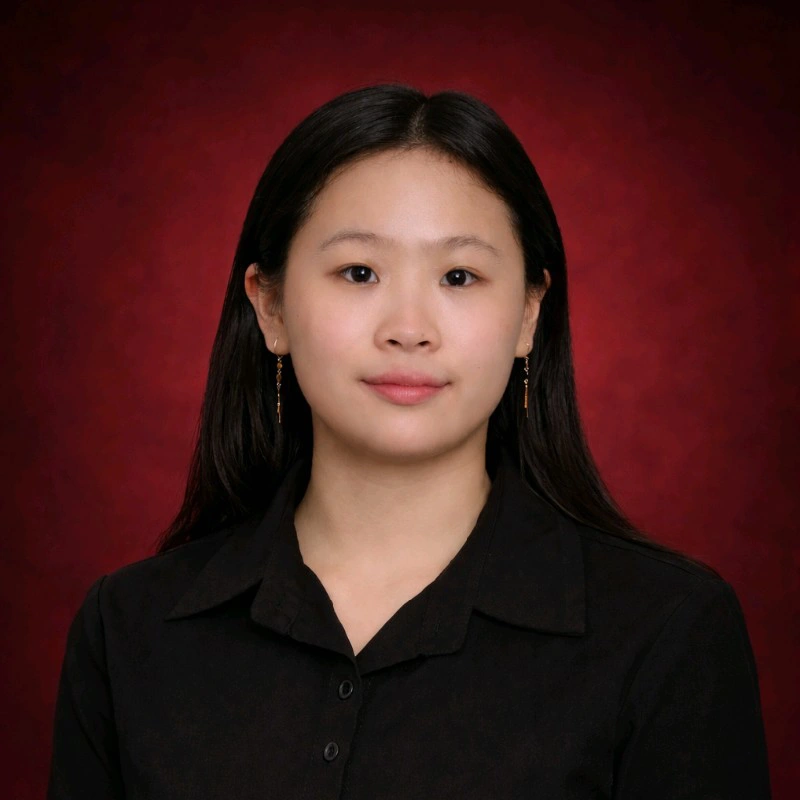

Mengubah Ide Menjadi Solusi Digital yang Interaktif.
Saya adalah seorang Web Developer dengan minat kuat pada desain UI/UX dan bersemangat menciptakan pengalaman digital yang bersih dan ramah pengguna. Saya senang mengubah ide menjadi solusi web yang fungsional dan menarik secara visual.
Selain pekerjaan saya di bidang teknologi, saya juga seorang Guru Mandarin yang bersemangat membuat pembelajaran menjadi menarik dan efektif. Saya percaya bahwa teknologi dan pendidikan memainkan peran penting dalam membentuk pengalaman yang lebih baik bagi banyak orang.
Batam, Indonesia
Berpartisipasi dalam pengembangan Aplikasi Penentuan Jadwal berbasis Sistem Pendukung Keputusan sebagai bagian dari Program Studi Independen (MBKM Mandiri).
Berpartisipasi dalam Proyek Pengembangan Website sebagai bagian dari Program Studi Independen (MBKM Mandiri) bersama Universitas Universal.
Mengembangkan Sistem Pendukung Keputusan (SPK) web full-stack untuk membantu komunitas vegetarian menemukan tempat makan terbaik menggunakan algoritma SAW.
Tertarik untuk bekerja sama atau berdiskusi? Jangan ragu untuk mengirimkan pesan kepada saya.